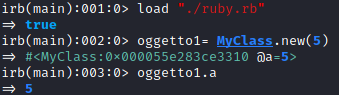
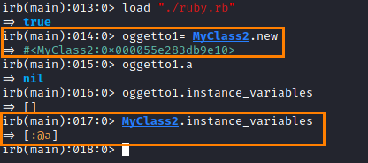

Instance Variables
• Instance variables are variables available only to each instance of
the class, meaning that
they change from object to object•
Since instance variables are encapsulated in any object of the class,
they
are not visible outside of the class• They are
defined
within class definition using the special character @Initialize instance
variablesDoing like the example below,
1. initialize instance variable (a)
2. let it
accessible with getter and the setter method a
class MyClass
# constructor method
def initialize(a)
@a = a
end
# setter method
def a=(value)
@a = value
end
# getter method
def a
@a
end
end
Load a File/Class by command line(irb/pry)There is a difference between an
instance variable that belongs to a class
object and an instance variable that belong to instances of the ClassBelow we have an
instance variable that belongs to the class object. We do not need to use initialize.
See that we can use
"new" instead of "new()"
@a belongs to the class object MyClass and not to the instances of the class MyClass
example:In the example below there are two different @a.
◇ One belongs
to the ClassObject object
◇ One belongs to an instance of ClassObject (obj object).
class ClassObject
# class object @a constructor
@a = 100
# class object getter/setter for @a
def self.a=(val); @a = val; end
def self.a; @a; end
# instance object getter/setter for @a
attr_accessor :a #instance
# instance object @a constructor
def initialize(a); @a = a; end
end
Bibliography:
https://www.geeksforgeeks.org/instance-variables-in-ruby/